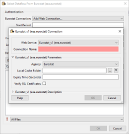
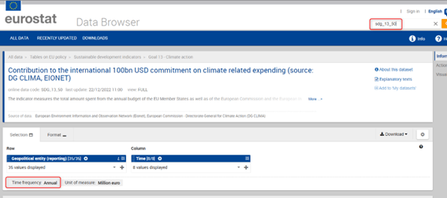
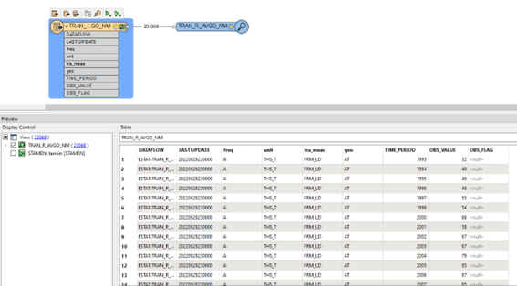

Getting started with the FME™ Package for Eurostat
FME is an ETL-tool made by Safe Software (www.safe.com). This package contains functionality to facilitate reading Eurostat data within FME. Find out more about the FME Package technology here: https://community.safe.com/s/article/fme-packages-faq
The package contains:
- the FME Reader
- FME Help files
Disclaimer: Every effort has been made to ensure the accuracy of this document. We apologize for any errors or omissions that remain. This document was written in the development stage of the reader. Versions of the package/reader in this document may not match the current version of the package that is in production right now. All the functionality in this document should be updated and correspond the current release.
Requirements
FME Desktop Software
To use the package you do need the software FME Desktop 2022.1 (build 22618) or a later version. If you do not already have access to FME it can be downloaded here:
https://www.safe.com/support/downloads/
FME Desktop Knowledge
This document is not a complete FME tutorial and using the functions requires basic FME knowledge. By visiting the FME Community (https://community.safe.com/) you can find training, webinars and more resources to learn the basics.
OS Support
The package has been tested both on 64-bit Windows and macOS. It should also work on Linux-versions supported by FME.
Eurostat Access
All users may consult or download data and publications free of charge from the Eurostat web site. For more information on Eurostat’s policies and copyrights rules please visit: https://ec.europa.eu/eurostat/web/main/about-us/policies/copyright
Getting the package
Manual install
You can obtain the ".fpkg" package file at GitHub:
https://github.com/eea/eea.eurostat.api.fme.
A sample filename is: eea.reportnet-0.2.0.fpkg where 0.2.0 states the version-number.
Automatic install from FME Hub
This is not yet supported for this package.
FME Hub can be found at https://hub.safe.com. Items in FME Hub can be listed and installed from within FME.
Installation of the package
When you have downloaded the package-file and have FME installed you are ready to install:
It’s recommended to start FME Workbench and drag the package-file onto the FME canvas:
Allow the installation of the package:

After installation it is recommended to restart FME Desktop and verify the installation.
(Note that you can double-click the package file to start the installation. However – if you have multiple versions of FME Desktop installed, it will be installed in the default version. By dragging the file into an already started FME session you can control what version the package gets installed to).
Verification and uninstall
By starting FME Desktop and select "Tools/FME Options" in the menu you can verify that the package was installed.

Adding a Reader in FME
You can add a Eurostat reader in any of the standard ways of FME.
Choosing a dataset is however only possible from the "Select File From Web" option. An example is shown below:

Adding a Web Connection.
The first time the reader is used, a web connection must be created. A webconnection is used to be able to easily make a distinction between datasets from different organisations. Right now the Eurostat site does not require authentication. Using a webconnection from the start will allow an easier transition into authentication if this is added in future versions.
A new webconnection is created by clicking on the "Eurostat Connection", "Add Web Connection...".

The Web Service chosen should be kept at the default "Eurostat_vX(eea.eurostat)". The connection name can be set as the user wants. It is however recommended to give it a clear name.
For instance:
- Eurostat – Eurostat
- Eurostat – DG COMP
The Agency chosen determines from which organisation data is read.
The Local Cache folder lets you decide where the cache is downloaded to. There are a lot of dataflows to choose from. To avoid loading the list and structure every time, this information is stored in the form of a cache.
The Expiry Time can be set to determine how long the cache should be saved.
Setting Parameters and choosing a Dataset
Once the web connection is created, you can start choosing a dataset and set the parameters.

All the parameters beside the web connection you’ve just created are optional.
Start and End Period
Providing a value for Start Period will ensure that data with a Time_Period greater than or equal to the given value will be read. Providing a value for End Period will ensure that data with a Time_Period less than or equal to the given value will be read. Values should correspond to the format for Time_Period for the chosen dataflow.
| Period | Format |
|---|---|
| Annual | YYYY-A1 or YYYY |
| Semester | YYYY-S[1-2] |
| Quarter | YYYY-Q[1-4] |
| Monthly | YYYY-M[01-12] or YYYY-[01-12] |
| Weekly | YYYY-W[01-53] |
| Daily | YYYY-D[001-366] |
| Year interval | YYYY/P[01-99]Y |
The parameter used on time period is very strict and can be hard to set properly since the dataflow itself doesn't specify what it accepts in the name. To see which format of filter is allowed it is suggested to look at the Databrowser of Eurostat. Here you can search for the corresponding dataflow either by name or code. The Data browser will then refer to the "Time Frequency" to help you choose the correct format for filtering.
For the dataset shown in the image below. The Start and End Period parameter should correspond to the Period and Format of “Annual”.

First N/ Last N Observations.
First/Last N Observations allows filtering data observations within a time series to limit the number of observations returned. Providing values will restrict the reader to only fetch the first N Observations and/or the last N Observations of the dataflow with consideration taken to the optional Filter on time.
- This filter may be applied to data which has been filtered by dimension and / or time.
- First N Observations return the first N observations in the corresponding series
- Last N Observations return the last N observations in the corresponding series
- Both definitions may be applied e.g. to return the first and last observations in a series.
- If the filter is wrong, then a response is returned with no observation results.
Keep in mind that N observations does not equal N features. An observation is the unique combination of the code lists for a certain time period.
As an example: As shown in the image below, when First N observations is set to 1. The first 768 rows of this dataflow are given as a result. This since 2012 is the first observation. But in this case “geo” and “animals” makes them unique for that time period. Making all a first 1 observations.

When setting first/last observations, null values will be read for the Time Period and value attributes. This is done to compliment missing data. For the case shown above for instance, there is no observation for; "Live Horses2 (A1100) in Belgium and Austria, the rows will be added with both "TIME_PERIOD" and "OBS_VALUE" set to <null>.

Parameter limitations and time-outs
It can take time for the backend of Eurostat to prepare this data. Therefore, the reader will be slower and sometimes might time-out the first time. The full datasets are ready to be shipped on Eurostat’s side. These custom filter files need to be created first. Therefore, the first time a filter is set, the back-end of Eurostat needs time to create the file and then get it ready to be downloaded. When filtering there is also a limitation on how many records can be filtered. When using a filter, the maximum number of features that are allowed to be in the result are 1.000.000.
Choosing the dataset
Once the parameters are set to the users liking, a dataflow can be chosen.
The dataflows shown are based on the organization chosen in the web connection. You can navigate through the folders until you’ve found the desired dataflow. Select it and click on “ok”.
If you know the name or part of the name of the dataflow you are looking for. You can use the search function to quickly find it.

The dataset you select will be represented as Feature Type in FME when you finish adding the Reader:

The Feature Type Name will contain a random UUID as a suffix. This is to ensure that the correct data is read when filters are added afterwards.
Adding Geometries
When reading data from Eurostat, by default, no geometries are read.
Most datasets that come from Eurostat come with a GEO code list (attribute). This Geo code list contains values that may correspond with the NUTS (Nomenclature of Territorial Units for Statistics) codes. These GEO codes in combination with the year of the observation (Time_period) can be combined to find the correct NUTS geometry. This geometry will correspond with the feature at the time of observation. A custom transformer called “NUTS” can be used in the workspace to add geometries to the features as shown below:

Please note that an observation can have a geocode that represents an aggregate of countries or regions. These observations/features will not get a geometry since they do not correspond to any NUTS object.
Adding Code List attributes
When reading data from Eurostat the attributes come in the form of codes. They don’t always clearly indicate what they mean. To get the proper value a lookup must be performed versus the official code lists. These code lists can be found online by using the following link, where X equals the attribute Name of the cost list.
https://ec.europa.eu/eurostat/api/dissemination/sdmx/2.1/codelist/ESTAT/X
for example:
https://ec.europa.eu/eurostat/api/dissemination/sdmx/2.1/codelist/ESTAT/FREQ
To make this process easier a custom transformer has been developed that will dynamically change all the attribute values to their corresponding code list value.

The LookUp transformer comes with 1 parameter for the language. This can be either EN, DE or FR. In the example above DE was chosen to get the results in German. The other options correspond to English and French. This will change values like “A” in the freq attribute to “Annual” or “AL” in geo to “Albania”.
This transformer must do a lookup for each attribute and each feature. It can therefore take quite some time.
To use this custom transformer. You first need to install the “EurostatLoopedLookup.fmx” transformer which is included in the getting started zip file. You can simply install it by Right clicking it and choosing the “Install with FME Workbench” option for the version you want to work in (2022.1 or higher).